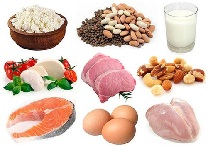
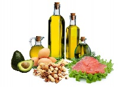

Поняття
До органічних сполук належать не тільки природні речовини, які отримуються при розвитку рослин, або в результаті життєдіяльності тварин, але і багато штучно отриманих в лабораторії речовин. До складу органічних молекул органічних речовин поруч з вуглецем(C) входять деякі хімічні елементи. Це насамперед водень(H), кисень(O), азот(N), сірка(S), галогени(Cl, F, Br,..) і фосфор(P).
- 
- 
Характеристика
Білки:
- складаються з амінокислот, сполучених пептидними зв'язками;
- відома роль в організмі — каталітична (ферменти);
- виконують роль у генетичній інформації;
- виконують стуктурну, захисну та транспортну функції;
- містяться найбільше в м'ясі, яйцях, бобових та ін;
- мають 4 рівні структурної організації.
Жири:
- мономерами являються жирні кислоти;
- нерозчинні у воді;
- утворюють складні комплекси з іншими хім. сполуками:
- Фосфоліпіди;
- Гліколіпіди;
- Ліпопротеїни;
- виконують найчастіше запасаючу та захисну функції;
- містяться в молочних продуктах, оліях, рибі, злаках тощо.
Вуглеводи:
- складаються з Карбону, Оксигену та Гідрогену;
- діляться за кіл-тю груп мономерів на: моносахариди, олігосахариди та полісахариди;
- виконують здебільшого енергетичну функцію;
- також виконують структурну (у рослин), запасаючу (в печінці) і інформаційну (в ДНК і РНК);
- моносахариди солодкі на смак, розчинні;
- полісахариди не солодкі та нерозчинні;
- містяться в усіх овочах та фруктах, хлібних виробах, злаках та ін.
Фізичні і хімічні властивості
| Властивості | Білки | Жири (ліпіди) | Вуглеводи | Спільне |
|---|---|---|---|---|
| Розчинність у воді | Розчинні та нерозчинні | Нерозчинні | моно с.:Розчинні, полі с.:Нерозчинні | - |
| Температура плавлення | ~220-310 °C | ~50-70 °C | 170 °C (Цукор) | Мають відносно високі t пл. |
| Довжина мономера | 0,34 нм | Змінна | ~0,75 нм | - |
| Структурна формула | NH2-HC(R)-COOH | CH3-(CH2)n-COOH | Cn(H2O)n | Всі мають C, H i O |
| Хімічні зв'язки | Пептидні, водневі, дисульфідні та ін. | Ковалентні | Ковалентні | - |